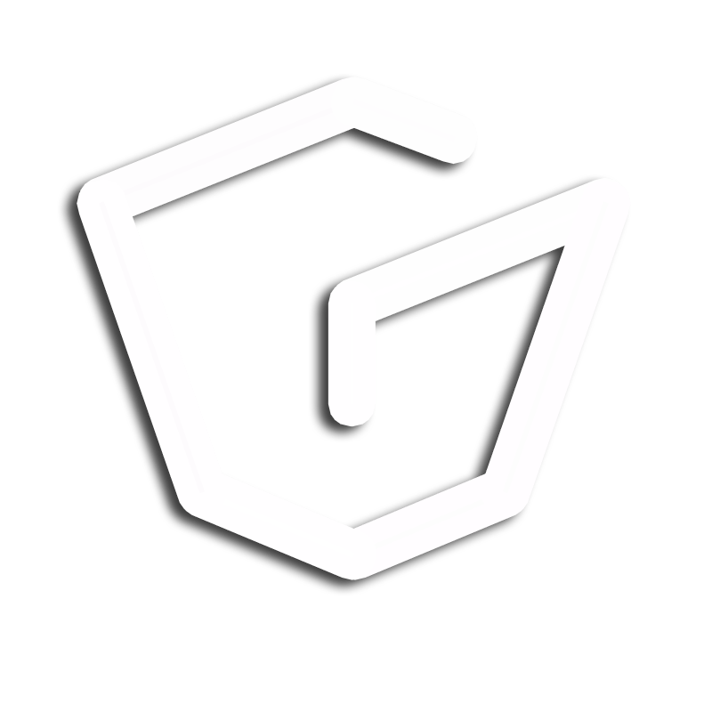

Índice
- 1.- Introducción
- Presentación
- Antecedentes
- Problemática
- 2.- Objetivos
- 3.- Planificación
- 4.- Plan de negocio
- Introducción a Tekin
- Análisis de la competencia
- Modelo de negocio Tekin
- Servicios de Tekin
- Estructura de Tekin
- Plan económico
- 5.- Conclusiones
- 6.- Líneas futuras
Introducción
Introducción - Objetivos - Planificación - Plan de negocio - Conclusiones - Líneas futuras
Iñaki Cortajarena

@icortajarena
- PFC Informática
- Departamento de Ornanización de empresas
- Emprendedor Gukere
- Desarrollos HTML5 en Saiolan
1
Introducción - Objetivos - Planificación - Plan de negocio - Conclusiones - Líneas futuras
Antecedentes

- Mondragon Unibertsitatea
- 3.100 Alumnos 22 Titulaciones
- Metología de enseñanza orientada a proyectos "PBL"
- Departamento Organización de empresas
- Profesionales en la creación y gestión de empresas
2
Introducción - Objetivos - Planificación - Plan de negocio - Conclusiones - Líneas futuras
Problemática

- Creación de
- muchas ideas
- sin continuidad
- por falta de información o dedicación.
- La única solución es acudir a un CEI
- Empresas de alrededor
- con necesidades de I+D
3
Objetivos
Introducción - Objetivos - Planificación - Plan de negocio - Conclusiones - Líneas futuras
- Crear un modelo de negocio de Tekin
- Detallar un plan de negocio
- Crear plataformas de comunicación y expansión
4
Planificación
Introducción - Objetivos - Planificación - Plan de negocio - Conclusiones - Líneas futuras
- Creación de equipo Tekin
- Estudio de mercado
- Selección de actividades a realizar
- Métodos de financiación
- Creación del plan de negocio
5
Plan de negocio
Introducción - Objetivos - Planificación - Plan de negocio - Conclusiones - Líneas futuras
Tekin
TEKIN es un equipo de personas que trabajan para animar, guiar y apoyar a todo el colectivo de Mondragon Goi Eskola Politeknikoa
6
Introducción - Objetivos - Planificación - Plan de negocio - Conclusiones - Líneas futuras
Análisis de modelos de negocio de la competencia

- Zitek Emprendedores
- Actividades similares
- De la mano de la UPV
- Financiado por subvenciones
- Ligado a la universidad y empresas del entorno
- UPI Argentina
- Autofinanciado
- con talleres para emprendedores
7
Introducción - Objetivos - Planificación - Plan de negocio - Conclusiones - Líneas futuras
Modelo de negocio TEKIN

The Business Model Canvas de Alexander Osterwalde
8
Introducción - Objetivos - Planificación - Plan de negocio - Conclusiones - Líneas futuras
Descripción de servicios TEKIN

Actividades realizadas por Tekin desde EPS-MU a una CEI
9
Introducción - Objetivos - Planificación - Plan de negocio - Conclusiones - Líneas futuras
Estructura de TEKIN

- - Iraitz Elorza
- - Jaione Gainzarain
- - Juan Ignacio Igartua
- - Leire Markuerkiaga
- - Maider Zabala
- - Nekane Errasti
- Profesores, tutores, asesores...
- expertos en el emprendimiento
10
Introducción - Objetivos - Planificación - Plan de negocio - Conclusiones - Líneas futuras
Plan económico

- Sensibilización: 6.060€
- Generación: 3.420€
- Captación: 7.665€
- Desarrollo: 15.280€
- Financiación: 6.125€
- Total: 38.550€
- Ingresos: 40.000€
- Caja: + 1450€
11
Conclusiones
Introducción - Objetivos - Planificación - Plan de negocio - Conclusiones - Líneas futuras
Estado de los objetivos...
- El modelo de negocio ha sido definido
- El plan de negocio ha sido realizado y es viable
- Tekin dispone de plataformas de difusión
Conclusión del plan de negocio...
- No está del todo definido
- Basado en estimaciones
- En continua evolución
Conclusión personal...
- Aprendizaje del proceso emprendedor
- Proyecto diferente a lo estudiado anteriormente
- Tipo de trabajo poco afín a mi perfil
12
Líneas futuras
Introducción - Objetivos - Planificación - Plan de negocio - Conclusiones - Líneas futuras
A corto plazo...
- Tutorías más definidas en preincubación
- Salidas para buscar "necesidades del entorno"
- Instalaciones para coworking
- Nuevos métodos de financiación
A medio plazo...
- Creación de un Blog de Tekin
- Streaming de charlas/ponencias por YouTube
- Canalizador de información
- Asiste virtual de preincubación para intranet
A largo plazo...
- Expansión de Tekin a empresas
- Autofinanciación mediante actividades realizadas
13